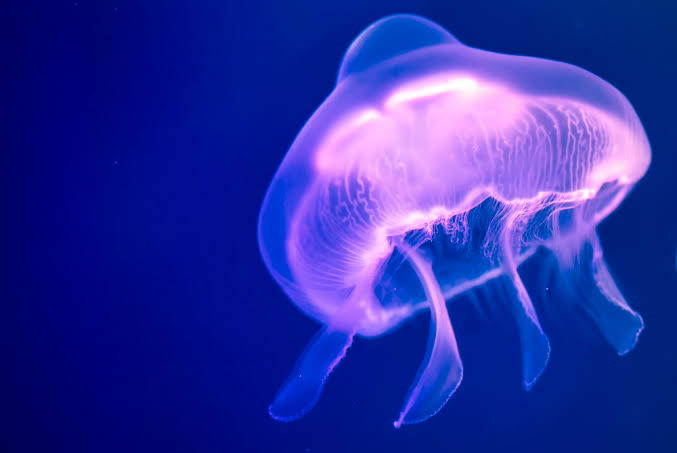

แมงกะพรุน หรือ กะพรุน จัดอยู่ในประเภทสัตว์ไม่มีกระดูกสันหลัง ไฟลัมไนดาเรีย ไฟลัมย่อยเมดูโซซัว แบ่งออกเป็นอันดับได้ 5 อันดับ (ดูในตาราง) ลักษณะลำตัวใสและนิ่มมีโพรงทำหน้าที่เป็นทางเดินอาหารมีเข็มพิษที่บริเวณหนวดที่อยู่ด้านล่าง ไว้ป้องกันตัวและจับเหยื่อ เมื่อโตเต็มวัย ส่วนประกอบหลักในลำตัวเป็นน้ำร้อยละ 94-98 ด้านบนเป็นวงโค้งคล้ายร่ม ด้านล่างตอนกลางเป็นอวัยวะทำหน้าที่กินและย่อยอาหาร พบได้ในทะเลทุกแห่งทั่วโลก แมงกะพรุนส่วนใหญ่จัดอยู่ในอันดับไซโฟซัว แต่ก็บางประเภทที่อยู่ในอันดับไฮโดรซัว อาทิ แมงกะพรุนไฟหมวกโปรตุเกส (Physalia physalis) ซึ่งเป็นแมงกะพรุนที่มีพิษร้ายแรงที่สุดในโลก และแมงกะพรุนอิรุคันจิ (Malo kingi) ที่อยู่ในอันดับคูโบซัว ก็ถูกเรียกว่าแมงกะพรุนเช่นกัน
